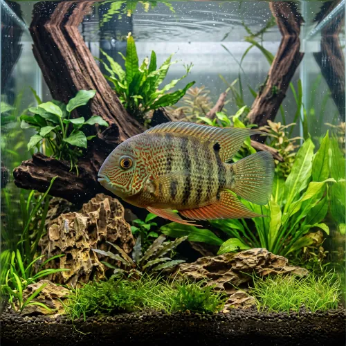

Nome popular principal
Acará-Severo
Acará-Severo, Severo, Ciclídeo-Severo
Ficha de peixe
Ciclídeos
Um ciclídeo majestoso de temperamento moderado que se torna o centro das atenções em aquários comunitários de grande porte.

Nome popular principal
Acará-Severo, Severo, Ciclídeo-Severo
Nome científico
Nome técnico essencial para taxonomia, cruzamento de manejo e referência editorial consistente.
Dificuldade de manejo
Use este nível como referência inicial, sempre considerando volume, estabilidade e compatibilidade do aquário.
Seção 1
Seção 2
Seções 4 a 6
Acará-Severo tem hábito alimentar onívoro. Excelente. 1 a 2 vezes ao dia. Possui forte tendência herbívora, necessitando de vegetais em sua dieta e rações específicas para ciclídeos de grande porte.
Machos adultos costumam apresentar manchas pontilhadas avermelhadas na cabeça e nadadeiras mais pontiagudas. Tipo de reprodução: Ovíparo. Dificuldade de reprodução: Intermediário. A postura ocorre sobre rochas planas ou troncos, com ambos os pais protegendo ativamente os ovos e os alevinos recém-nascidos.
Baixa. Substrato recomendado: Areia fina ou cascalho rolado macio. Necessidade de esconderijos: Média. Costuma devorar plantas de folhas macias; recomenda-se usar plantas de folhas duras como Anubias ou focar a decoração em troncos e rochas.
Seção 7
Devido ao seu tamanho impressionante, exige um aquário espaçoso e com filtragem robusta para lidar com a carga orgânica.
Seção 8
Sim, ele possui hábitos herbívoros proeminentes e costuma devorar a maioria das plantas naturais de folhas macias.
Recomenda-se um aquário de no mínimo 200 litros para manter um exemplar ou casal com conforto.
Ele é considerado semi-agressivo e calmo para seu porte, mas defenderá seu território e atacará peixes pequenos demais.